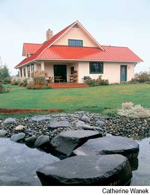
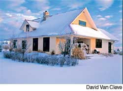
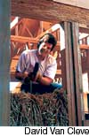
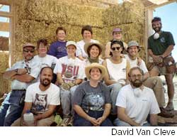
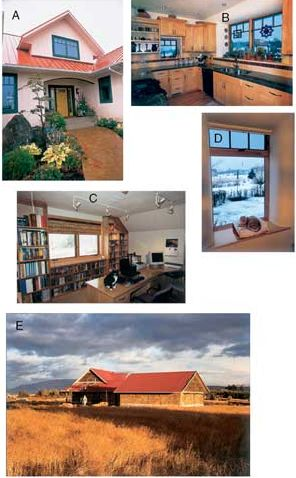

David and Margie Van Cleve did their homework when it came time to build their dream house near Yakima, Wash. As civil and chemical engineers, respectively, they knew early decisions would have lasting influences on their home’s comfort, durability and energy efficiency. With that interest in mind, they analyzed every design choice for its effect on their pocketbook - and the planet.
For several years, the Van Cleves had been thinking about building their dream home. David’s work as a civil engineer brought them to central Washington state, where they happily settled “for the duration.” They knew they wanted their home to resemble a country farmhouse and blend in with the region, which is famous for its fruit orchards. Based on their research, David had drawn a floor plan they liked, but they could not visualize how the outside would look.
Committed to energy conservation, the Van Cleves also wanted a well-insulated house that was not of standard “stick-built” construction. “We had looked into straw bale, but it seemed too exotic,” Margie says. “We were actually thinking of going with foam-insulated concrete forms or stress-skin panels.”
Then they found Washington architect Terry Phelan of Living Shelter Design, who specializes in sustainable design. Phelan told the Van Cleves that the central Washington climate, with its low annual rainfall and extreme seasonal temperature swings, was perfect for straw bale, and that she could give them pointers on building with straw. And “Margie’s face lit up,” Phelan says.
Having previously lived in New Mexico, Margie loves the look and feel of the thick-walled adobe buildings that are Southwestern hallmarks. She imagined their cats lounging on wide, sunny windowsills with the curved edges that are so easily created with straw bales. And because her job allows her to telecommute, she needed a quiet workroom. In discussions with Phelan, they came up with the idea of creating a loft office, to utilize space under the tall, gabled roof.
“Terry took our layout and came back with a house of reasonable size,” David says. “The design looked livable, and the outside looked like a nice, friendly house that would fit in with our neighborhood.”
The approximately 2,400-square-foot home cost about $130 per square foot. The total cost was slightly higher than a standard “stick-frame” home because of the many high-quality features the Van Cleves incorporated into the design, including double-glazed wood-frame windows, hardwood floors, wool carpets and custom maple cabinets. They also chose commercial-grade materials for the plumbing and electrical systems, trading a “higher capital cost for lower maintenance.” Margie says, “As engineers, we chose to put extra quality into the infrastructure.” The result is a home that should have a much longer life than a conventionally constructed house.
Through a landscaped front yard, a path curves to an inviting arched entry. Just inside the door, custom shelving, cleverly integrated under a stairway to the second floor, displays the Van Cleves’ collection of Native American arts and crafts. To the left of the main entry, the kitchen, dining and living rooms are integrated into a spacious great room with a cathedral ceiling and views to the south and west. To the right of the entry are the master bedroom and guest suite, both designed with 36-inch-wide “zero-step” doorways.
“We want to grow old in this house, so the ground floor is pretty much wheelchair accessible,” David says. “And we created a separate suite that’s also accessible in case Margie’s mother needs to live with us.”
Through the more frequently used door on the south side of the house is one of the home’s more unique rooms, the multipurpose mudroom. Given central Washington’s dry climate, Phelan designed the mudroom to be a central collection point for dirt and dust. The mudroom also contains a clothes washer and dryer, pantry and recycling center inspired by the book The Not So Big House. In a space the width of a large closet, Ken Schiffelbein of Artistic Cabinets built a base cabinet that houses three deep drawers, each with three 10-gallon trash cans. The trash cans hold recyclables and store bulk cat food. The Van Cleves also open their mail here and readily send junk mail to the recycling bins.
The mudroom has another handy feature for the four Van Cleve cats: Buzzy, Little Bit, Monster and Patches. Margie and David wanted to keep their upright freezer in the mudroom so it would be near the kitchen. To create space for both freezer and the cats’ litter box, Schiffelbein built an 18-inch-high wheeled platform, which raises the freezer for easier access and leaves plenty of room underneath for the litter box. This innovation accommodates humans, felines and appliance.
Upstairs is Margie’s home office, where she telecommutes via a high-speed Internet connection. Her spacious office has a lovely view to the east, toward Yakima Canyon, and is open to the great room below. The upstairs loft also could be enclosed to create a third bedroom should the need arise, and it is already plumbed for another bathroom. As an avid amateur photographer, David had the attic space fitted with a built-in storage system for his slides and photographs. “We like our floor plan a lot - the only change I would make is to make the sliding patio door larger, so it would open wider,” Margie says.
When the time came to build the straw bale walls, Phelan led a volunteer work party of the Van Cleves’ friends and neighbors. This was the first straw bale building for all involved.
“We were Terry’s first straw bale design that actually got built,” Margie says. “What we knew about straw bale was from two books, Build It With Bales and The Straw Bale House.”
From the beginning, the Van Cleves learned to adapt to unforeseen situations. “Our house was designed for 36-inch bales but we got 48-inch bales,” Margie says. “We had to make lots of custom bales, which became a real pain.” Plus, the contractor put in more posts than the design called for, which meant more notching. Still, the wall-raising was a rewarding and bonding experience. Whenever something tricky came up, the crew would stop, talk it through and figure it out. “It’s not rocket science,” David says. Since then, two of the volunteer couples have built their own straw bale homes, with the Van Cleves on hand to assist.
To help control costs and the quality of their home, David and Margie acted as their own general contractor. Living next to the building site, in a house they sold after the new home was finished, made the work easier, but it still was a challenge.
“We’d change clothes after work, go over and work on the house until 10 p.m.,” Margie says. “We worked 95 percent of nights and weekends. After about six months, we were really frazzled. It was hard, but I would do it again.”
As the general contractor, they had more control over the building process, including hiring subcontractors and occasionally firing those who didn’t perform professionally. They also were on-site to supervise and make the myriad decisions required along the way. “I’d go to sleep at night with a pad of paper by the bed in case I thought of something, or had a problem bugging me,” Margie says.
“Because we were on our own construction schedule, when we got to the electrical system we could take our time picking out fixtures and thinking things through,” David says. “So our switches and lights are just what we wanted.” David did all the plumbing and electricity, including wiring the fixtures, which were designed to accommodate energy-efficient,compact-fluorescent bulbs. He kept electrical runs in the interior walls as much as possible and avoided running plumbing through the straw bale walls.
David and Margie also did the interior painting, stucco prep and the rock work surrounding the fireplace, but subcontracted the plastering. They turned to Rich Radoslovich, who chose a cement/lime exterior stucco, and a gypsum plaster for the interior finishes.
David and Margie chose red oak hardwood floors rather than a concrete slab (traditional for passive solar and geothermal designs) for their floor surface. Atop the stem wall - the perimeter foundation wall that supports the post-and-beam structure - they installed truss joists. This allowed them to insulate the floor below the plywood subfloor and hardwood finish floor. The red oak flooring is made of pieces called “shorts.” These 10- to 24-inch pieces are the leftovers after full-length oak pieces are cut; consequently, they are relatively less expensive.
For the structure, 4-by-4 wood posts connect to 3-by-9-inch laminated beams above, which support standard wooden trusses. A brick-red, standing-seam metal roof tops the structure. With an apple orchard next door, the red roof with green trim fits in with the neighborhood.
For heating and cooling, the Van Cleves installed a closed-loop, ground-source heat exchanger that taps into the constant 55 degree temperature of the Earth below the frost line. In this “geo-thermal” system, ethylene-glycol (anti-freeze) solution circulates in pipes buried beneath the house. The antifreeze passes through a heat exchanger, which a heat pump uses to warm or cool air distributed in ductwork running throughout the house. Whenever the heat pump compressor comes on, it preheats the home’s hot water. The closed-loop, geothermal heat pump system has an estimated payback of 10 years at current Northwest energy prices, which are some of the lowest in the United States. “Geothermal is the most energy-efficient way to heat a home, period,” David says.
The Van Cleves decided to site the house to maximize the expansive views to the west. This is not the ideal orientation for passive solar design, which calls for mostly south-facing windows. But the house design does follow two other tenets of energy-efficiency: an air-tight envelope and high R-value insulation. (“R-value” measures resistance to heat flow; the higher the number, the better.)
David and Margie’s superinsulated envelope has proven effective. The straw bales provide an R-value of 38 for the 18-inch-thick walls, almost twice the code requirement in Washington. Floor trusses insulated to R-30, ceilings insulated to R-45 and insulating shades on double-paned windows also increase the house’s energy efficiency. The Van Cleves’ energy bills remain low - much less than those of similarly sized stick-frame houses.
To prevent overheating from west-facing windows in the summer, the Van Cleves developed a strategy to passively cool their home. On warm afternoons, Margie closes the shades on the west side of the house. After dark, she and David open the east/west windows, and the cool night air rushes in, flushing any remaining warm air out the upstairs windows. In the morning, they close the windows again, trapping the cool air inside for the day. Thanks to this strategy and the straw bale walls, the Van Cleves only need to cool the house with their geothermal system about two weeks out of each summer. And since the home’s completion in 1999, they’ve only used their backup propane fireplace once - last winter, when temperatures dipped to 20 degrees below zero. The couple also built a three-car garage with straw bale walls using a wood pole-barn design. The garage roof is oriented due south, to accommodate a future photovoltaic solar-power system to provide electricity.
After 13 months of construction, David and Margie finally moved into their nearly finished home. They remember well the wonderful feeling of sitting at last in their great room, in awe of their accomplishment. “Our house turned out great!” they say, noting the best part is “the thick walls and the resulting warm, quiet home.”
By virtue of their deep involvement in building their home, the Van Cleves are now the local straw bale experts, and they get a lot of visitors wanting to experience a straw bale house for themselves. “We love to show our home,” David says. “People’s first reaction usually is, ‘Wow! What a nice house!’”
The Van Cleves have surrounded their country home with a perennial landscape of native and drought-tolerant plants, many ordered from a Santa Fe, N.M., nursery. They also spread a thick wood-chip mulch to hold in moisture and help stop noxious “cheat grass” from invading their garden. Last year, they splurged, installing a gazebo and a pond with a waterfall that now attracts a diversity of wildlife. And the couple’s four cats, who have the run of the house, lounge most afternoons on cozy, bale-wide windowsills, watching the birds that gather in the garden.
|
 CATHERINE WANEK The red roof blends well with a nearby apple orchard. Also pictured above is the door on the south side of the house, which leads to the multipurpose mudroom |
 DAVID VAN CLEVE "We worked 95 percent of nights and weekends. After about six months, we were really frazzled. It was hard, but I would do it again." |
 DAVID VAN CLEVE The Van Cleves and their straw bale building crew. David Van Cleve is at right in the front row; architect Terry Phelan is fourth from left (in straw hat) in the center row; and Margie Van Cleve is second from left in the back row. |
|
 DAVID VAN CLEVE A. The path through a landscaped front yard leads to an arched entry. |
 CATHERINE WANEK; DAVID VAN CLEVE (4) |
|